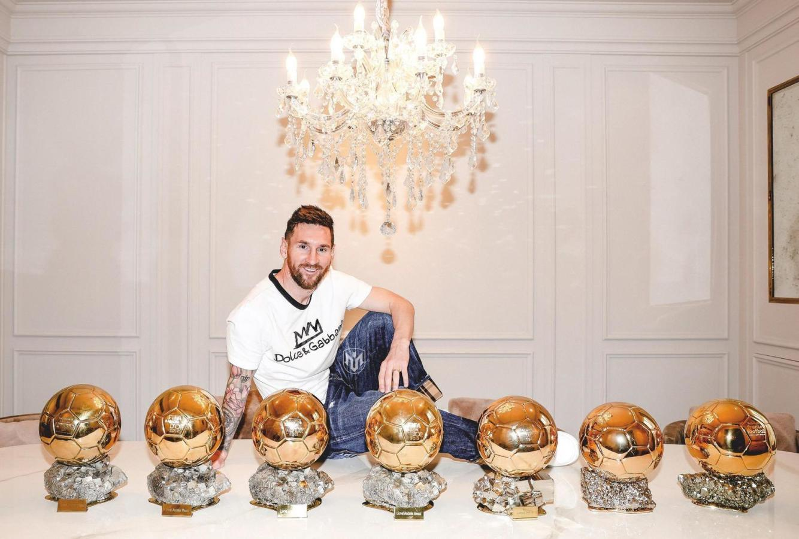

Palmarés
Messi ha conquistado un total de 42 títulos oficiales a lo largo de su carrera:
35 con el FC Barcelona, dos con el PSG, tres con la selección argentina, uno con la selección argentina sub-20 y otro con la sub-23.
10 Ligas Españolas
8 Supercopas de España
7 Copas del Rey
4 Champions League
3 Mundiales de Clubes
3 Supercopas de Europa
1 Mundial

1 Ligue 1
1 Supercopa de Francia
1 Copa América
1 Finalissima
1 Mundial Sub-20
1 Medalla de Oro en los Juegos Olímpicos
TÍTULOS INDIVIDUALES DE LEO MESSI
9 MVP de LaLiga
8 Pichichis de LaLiga
7 Balones de Oro
6 Botas de Oro
6 Máximo goleador de la Champions
4 Onze d'Or
2 Mejor jugador de Europa
1 MVP Mundial 2022
1 Premio The Best
1 FIFA World Player
1 Balón de Oro Mundial 2014
1 MVP Copa América 2021
1 FIFA FIFPro
1 Premio Laureus
1 Golden Boy
1 Trofeo Bravo